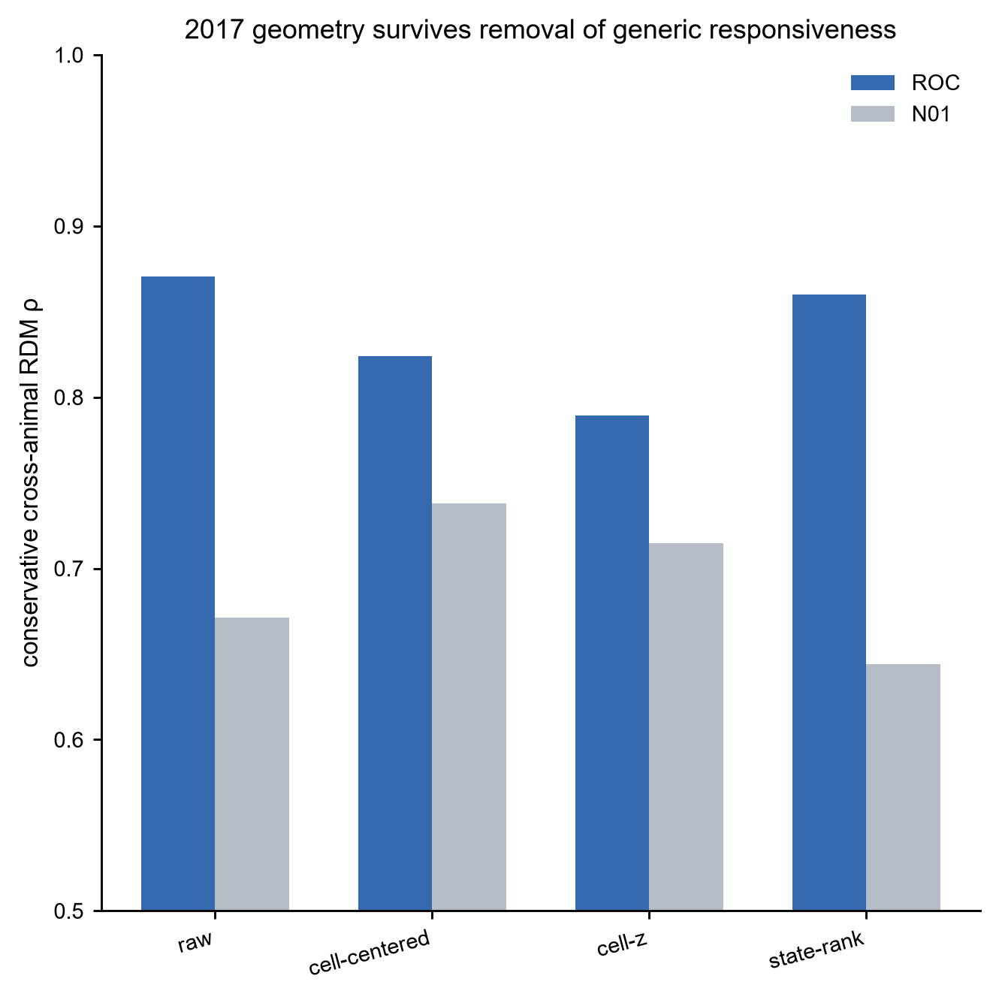
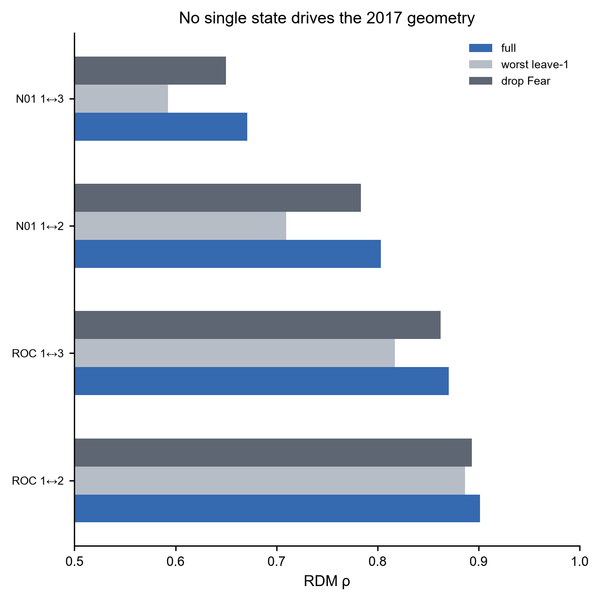
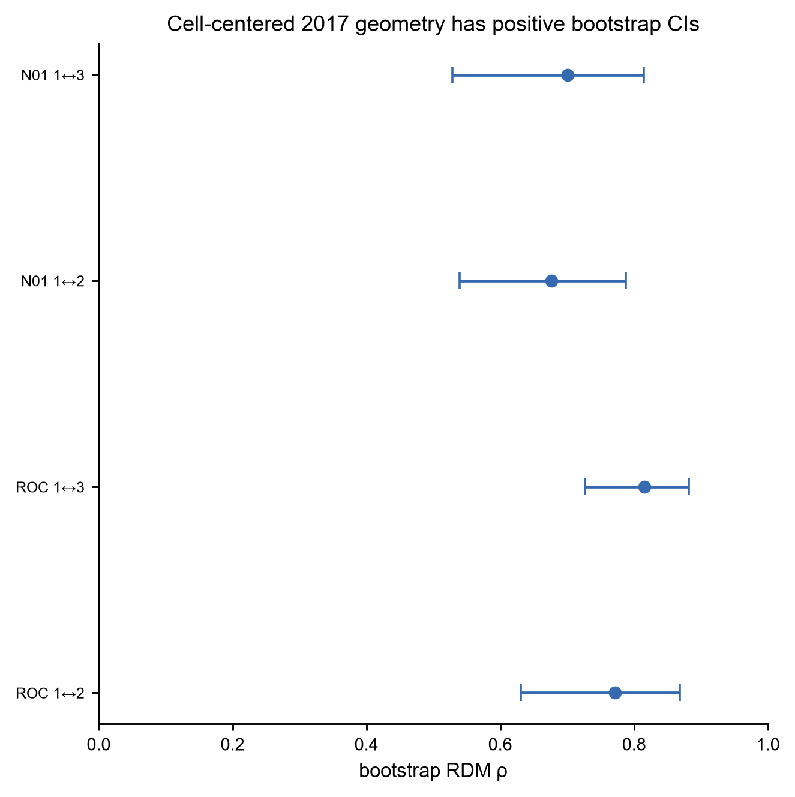
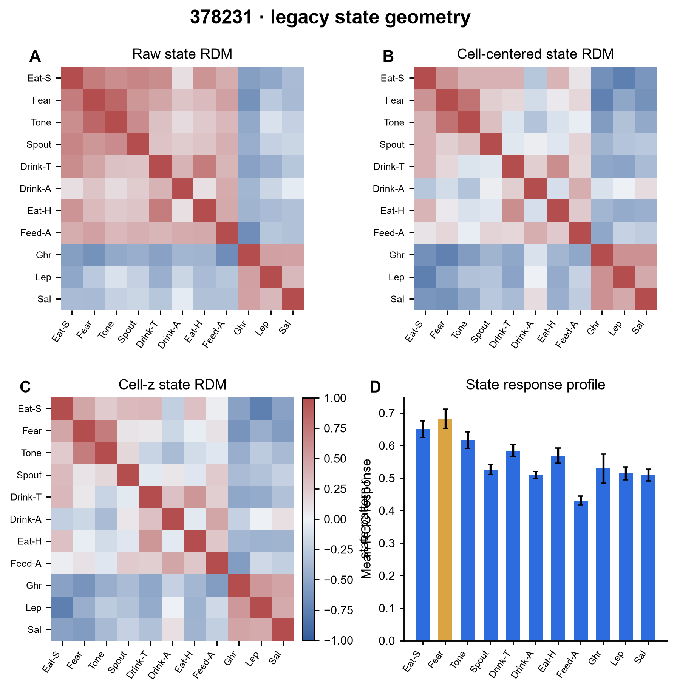
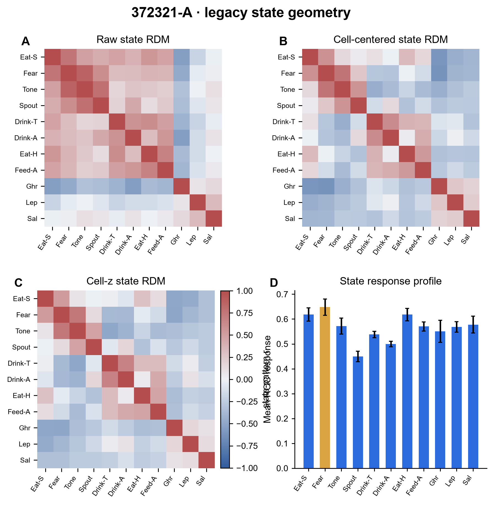
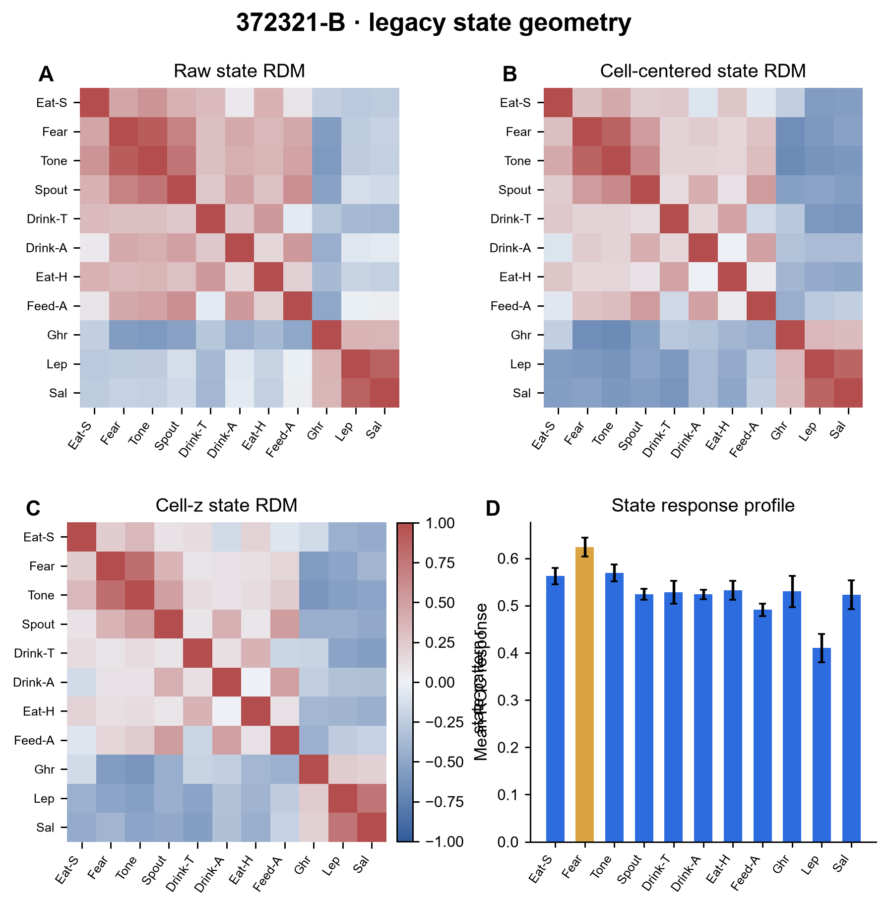
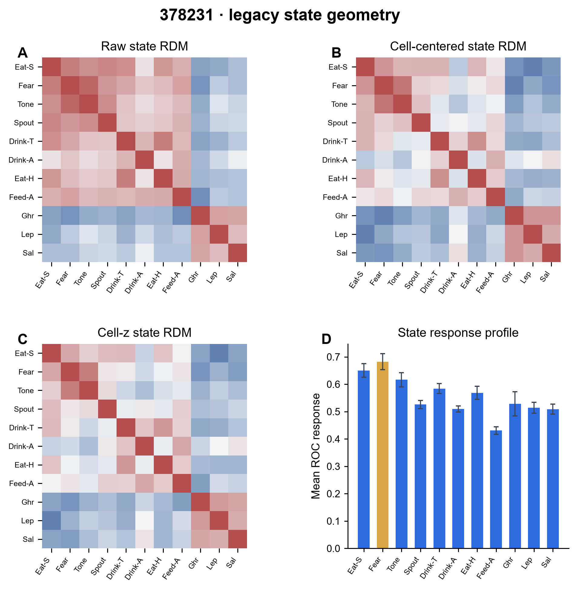
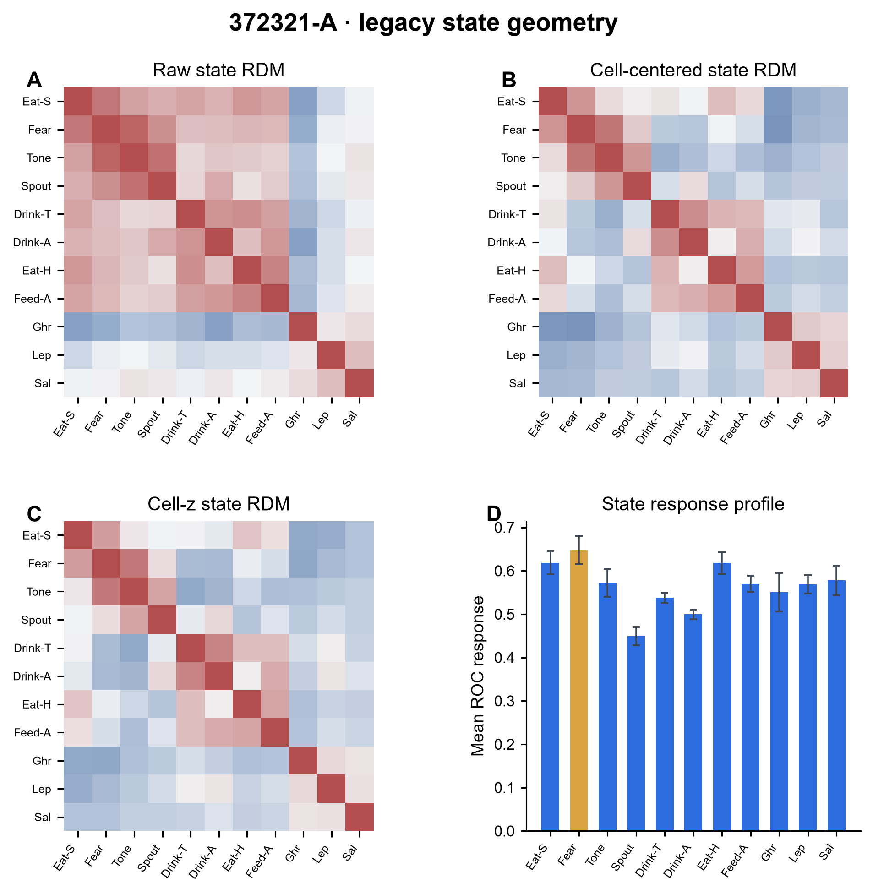
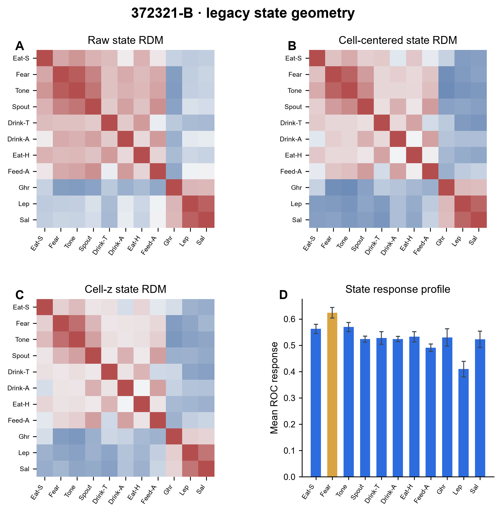

两åªçœŸå®žåŠ¨ç‰©æ˜¾ç¤ºå¯é‡å¤çš„ state geometry，而且ä¸æ˜¯ generic cellular responsiveness çš„å‡è±¡ã€‚
The legacy matrix resolves to ANM378231 plus ANM372321. The two ANM372321 source lineages are within-animal robustness units, never extra animals. Cross-animal geometry survives representation changes, cell-centering, cell-z normalization and deletion of each individual state.

Residualized geometryã€bootstrap CIã€leave-one-state robustness 与 exact state-label null。 PDF
Residualization、bootstrap CI、state deletion 与 lineage-level geometry
The key question is not whether a raw RDM looks similar, but whether the geometry survives removal of generic responsiveness and single-state leverage.

Geometry survives residualization
Raw, cell-centered, cell-z and state-rank representations retain cross-animal organization.

No single state drives the result
Worst leave-one-state and drop-Fear analyses preserve substantial geometry.

Bootstrap intervals remain positive
Cell-centered cross-animal geometry remains well above zero.

ANM378231 state geometry
Raw, cell-centered and cell-z RDM structure in the 96-cell lineage.

ANM372321 lineage A
First within-animal source lineage used as a robustness unit.

ANM372321 lineage B
Second source lineage from the same real animal.
ANM378231
Exact NID selection recovered. Raw ROC cross-animal geometry reaches Ï=0.901/0.870 versus the two ANM372321 lineages.
ANM372321
åŒä¸€åªçœŸå®žåŠ¨ç‰©çš„ä¸¤æ¡ source lineages。 They provide within-animal robustness and are never counted as two animals.
每条 lineage 都分别显示 raw、cell-centered、cell-z state geometry。

ANM378231 · 96 cells

ANM372321 · lineage A, 94 cells
